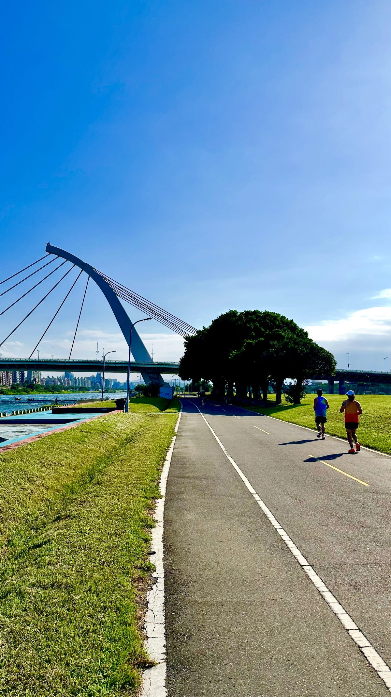
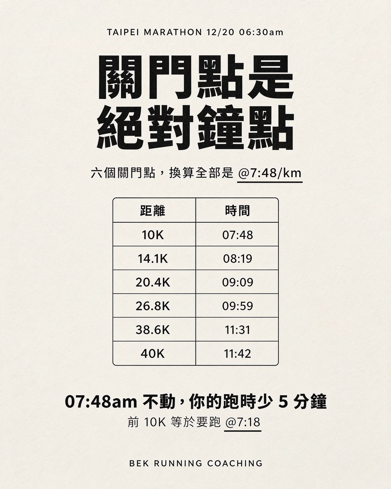

11 月 21 日星期六，早上八點，圓山捷運站。
我帶兩位學員跑了一堂峰值長距離課。不是純質量課，也不是純長距離，是把台北馬的第一關門點整段搬過來，真的跑一次。
雖然兩個人的挑戰目標不同，學員 A 是 5:10，學員 B 是 5:00。
但共同點更多：這是他們的第一場馬拉松，兩個人都要挑戰初馬，也都會被排在最後一區起跑，都會遇到那個第一關門點問題：槍響到真正通過起跑線，中間還有一段延遲時間。
初馬加上最後一區，往往是新手會忽略又最不好處理的組合。沒有完賽經驗可以對照，賽道上的每一段都是第一次，而關門點的時鐘不會因為你是第一次就等你。
為什麼要花一堂課去跑關門
台北馬的關門點是絕對鐘點。06:30 鳴槍，10K 定死在 07:48am，不管你在隊伍裡卡了多久才通過起跑線，那個鐘點不會為你往後移。
最後一區出發的延遲有多少，沒有一定數字。規則上只寫了「依鳴槍時間判定成績」，還有超過 06:45am 出發可被禁止。也就是說，你在後面排隊的那幾分鐘，官方不會還你。

既然延遲量未知，能控的只有一件事：前 10K 跑多快。
設計教案的時候，我給的判斷是這樣：延遲與擁擠不可預測，前 10K 必須更積極，寧可前面多留餘裕，也不要在 10K 被卡掉。於是這一堂就從「照課表跑 26K」變成「模擬第一關門點壓力測試 10K＋M 配長距離」。
怎麼設計
三層結構，全部在基隆河左岸的河濱自行車道，一半以上都是台北馬的實際賽道。
熱身 2K（E）。從圓山進河濱，到預定起跑點就歸零。
兩人同跑 10K ＠7:00。這一段是全課重點。官方 10K 關門給 78 分鐘，用 ＠7:00 跑 10K 是 70 分鐘，帳面上有 8 分鐘餘裕。這個數字要在真實賽道節奏下跑出來，當天才會有信心從容應對。
10K 之後各自跑 M。學員 A 的 M 是 ＠7:21，學員 B 的 M 是 ＠7:07。守不住就自然降回 E，不硬撐。這一層不是練，是量：量他們現在的 M 配速能連續承擔幾公里。
實際跑出來的數字
10K 關門點：兩人同跑，學員 A 68 分 47 秒、學員 B 68 分 52 秒，均配 ＠6:53。
設定的 ＠7:00 是 70 分，他們都跑進 68 分台。對照官方 78 分的門檻，這不是勉強過關，是把餘裕拉開到將近 10 分鐘。壓力測試的結果是：第一關門點不再是他們的風險。
10K 之後：這裡才是這堂課真正有價值的地方。
學員 A 從第 11 公里一路頂到第 22 公里，連續 12 公里收在 ＠7:00 到 ＠7:21。他之前最長的 M 只有連續 5 公里。心率從 160 溫和爬到 178，配速沒有散。
學員 B 通過 10K 關門點後，我告訴他我真正預設給他的目標配速，試著挑戰 ＠6:45。同樣 12 公里，他跑出每公里 ＠6:39 到 ＠6:49，比目標 M 的 ＠7:07 快 20 秒上下，踩在 T 的邊界，全程零掉速，心率壓在 150 到 157。他在之前的 M 連續跑甚至只有 3 公里。
兩個人含熱身、緩和都跑完 26 公里。對初馬跑者來說，這是他們人生目前單次最長的一次跑步，而且是在馬拉松配速之上完成的 22 公里之後才收尾。
這一點比數字本身重要。初馬最怕的不是跑不完，是不知道自己的極限在哪裡，於是比賽前半段不知該壓速或加快、後半段不知該撐或頂。他們現在拿到的是自己的實測值，不是推估值。
這堂課證明的事
不是證明他們體能夠。體能夠不夠，跑一次 26 公里看不出來。
證明的是另一件事：開場敢快或壓抑、後面守得住或可以加，這個組合是可以練、可以量的。
一般來說教練會要求你前面保守，後程加快，嚴守配速紀律。但關門點逼出的打法剛好相反，以 5:10 這種目標來說，前 10K 要比目標快 20 秒上下。這種打法很多人沒練過，比賽當天才第一次做，通常會亂。能先在賽道跑一次，身體就會記住那個節奏：前段稍快的時候，呼吸是什麼樣子、心率在哪裡，10K 之後回到目標配速要怎麼收，或是怎麼加。
你可以自己複製的做法
如果你也是初馬後段出發跑者，不需要教練騎車跟著，你也可以做一次。
找一條平坦、沒有紅燈的路線，河濱或田徑場都好。先熱身 2 公里，然後照這樣跑：
前 10K 用「關門換算配速」跑。把你那場的 10K 關門時間換成分鐘數，減掉你預估的起跑延遲，再除 10，就是你要跑的速度。以台北馬 78 分為例，延遲抓 5 分鐘，等於 73 分，也就是 ＠7:18。
10K 之後回到你的目標配速。記錄能連續守幾公里，什麼時候開始掉，掉之前的心率是多少。
收尾補到 20 到 24 公里。不用跑到 30，這一堂是測能力，不是拚里程。
你會拿到兩個數字：關門點的餘裕，還有 M 配速的實際承擔距離。這兩個數字在比賽前的價值，比再多跑一趟間歇都高。
常見問題
台北馬 10K 關門點是幾點？
06:30 鳴槍，10K 關門點 07:48，以鳴槍時間判定，不看個人通過起跑線的時間。
10K 關門給多少時間，配速要抓多少？
78 分鐘。從鳴槍起算等於 ＠7:48；若延遲 5 分鐘才通過起跑線，可用時間只剩 73 分。
排在最後一區起跑，前 10K 該怎麼配？
前 10K 要主動換算，不能照目標配速跑。以 78 分關門、延遲 5 分鐘為例，可用時間剩 73 分，＠7:18 只是壓線；要留安全邊際就得跑到 ＠7:00 上下，70 分鐘完成，緩衝拉到 8 分鐘。10K 之後再回到目標 M 配速。
後記：
那天的天氣很好，不到20 度、濕度 46%，但去程大逆風。兩個人在 10K 之後都沒有亂，這是他們各自練了兩個月的成果，第一次在真實的關門壓力下被驗證。
他們將要面對的，是自己的第一場馬拉松。
比賽那天會發生什麼，沒有人知道，延遲幾分鐘、人牆多厚，都要當天才曉得。
但至少有一件事已經知道了：他們跑過一次。
你今年的比賽，關門點換算成配速是多少，自己算過嗎？
← 回文章列表